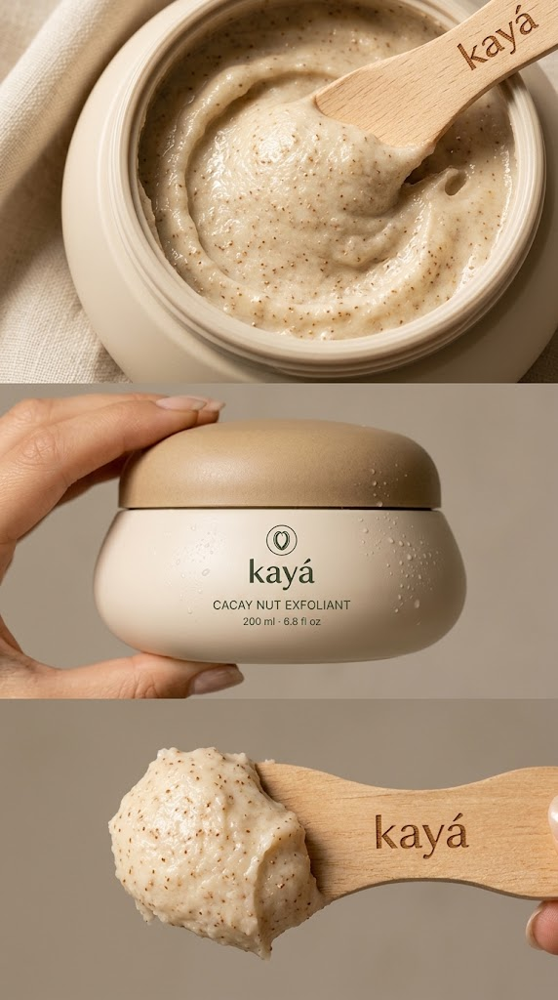
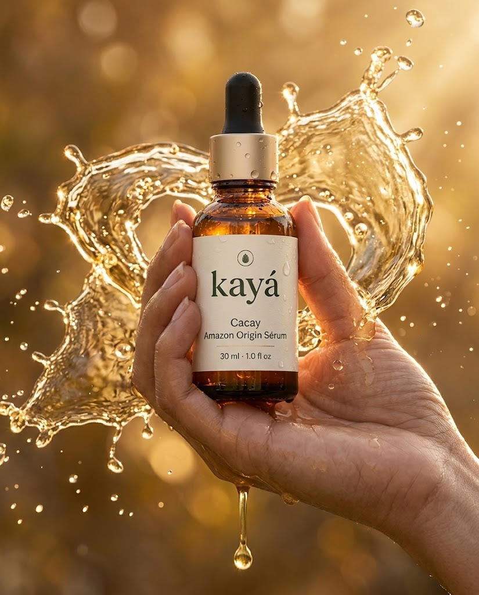

Lujo natural y cuidado superior. Descubre los extraordinarios beneficios de la nuez de Cacay amazónico.
Explorar la colección
Fórmula revitalizante con puro extracto de Cacay. Limpia suavemente, fortalece la fibra capilar y restaura el brillo natural.

Una emulsión ligera y lujosa para el cuerpo. Hidratación intensiva y regeneración celular potenciada por los antioxidantes del Cacay.
Únete a nuestra lista exclusiva para recibir lanzamientos anticipados, consejos de cuidado premium y ofertas privadas.